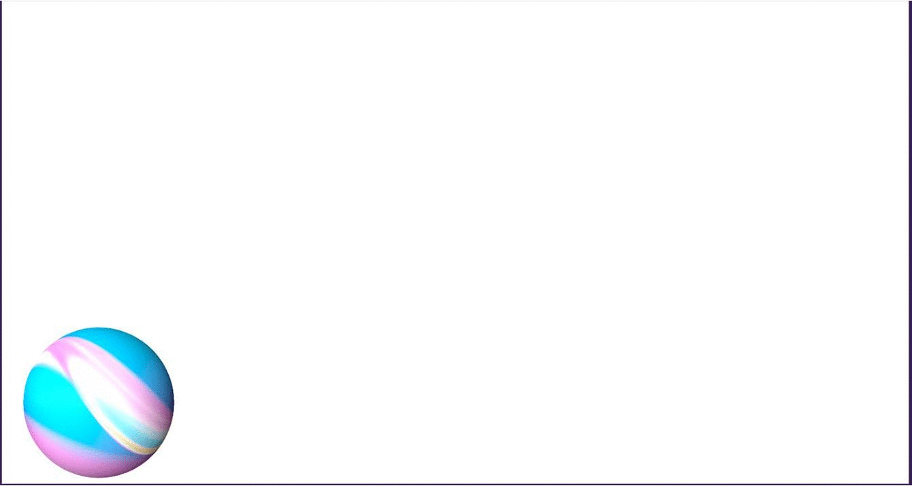
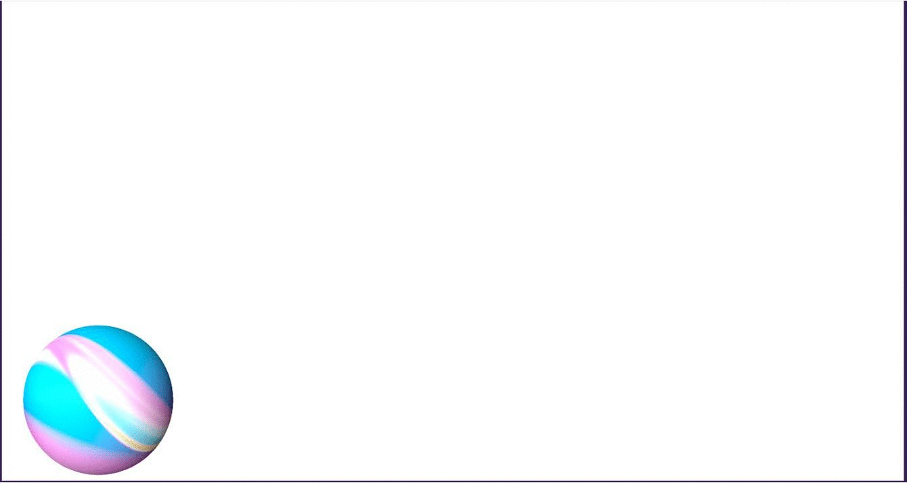

I made a gif of a ball bouncing across the screen. I used an online gif maker to put the animation together.
I first found a picture of a ball & placed it inside of a square. I then took multiple screenshots, moving the ball a little bit with each screenshot.
The gif maker took these images in order (then also in reverse order for the complete bounce) and put them in a really quick slideshow.
Below is one of the images I used in producing my animation. The remainder of the images were created as a result of sliding the ball across the screen.
